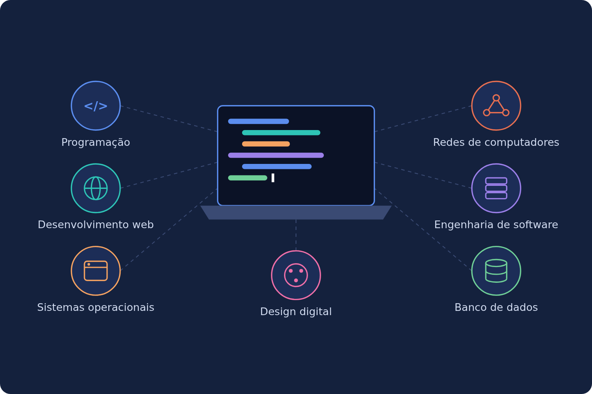
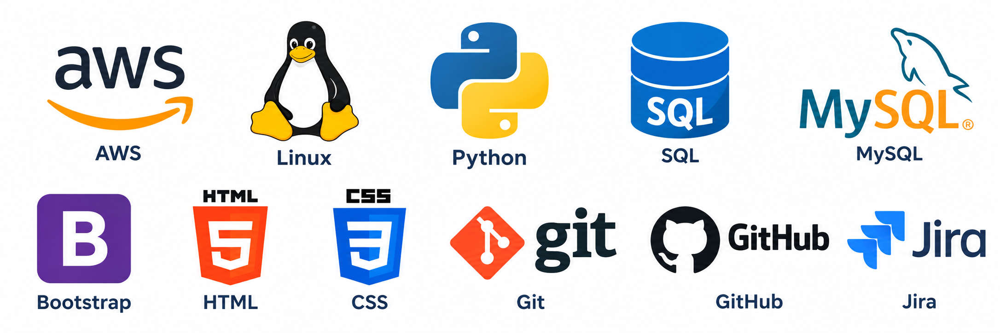

Sobre mim

Desenvolvimento Acadêmico
Ingressei na FATEC no segundo semestre de 2026. Desde então, venho ampliando meus conhecimentos em tecnologia, com foco em lógica de programação, desenvolvimento web, sistemas operacionais, redes de computadores, engenharia de software, banco de dados e design digital.
Objetivos
Meu objetivo é aprofundar meus conhecimentos em desenvolvimento de software, adquirir experiência prática e evoluir profissionalmente na área de tecnologia. Tenho interesse principalmente em Engenharia de Software e Desenvolvimento Web.
Habilidades
Hard skills
- HTML, CSS e Bootstrap
- Flask
- Python e lógica de programação
- SQL e MySQL
- Git e GitHub
- Linux e AWS
Soft skills
- Disciplina e persistência
- Esforçado
- Responsabilidade
- Trabalho em equipe (projetos API)
